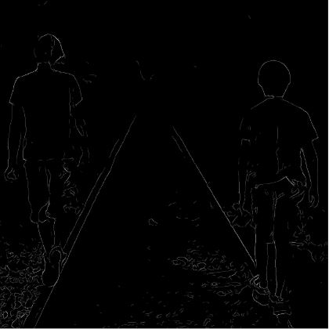
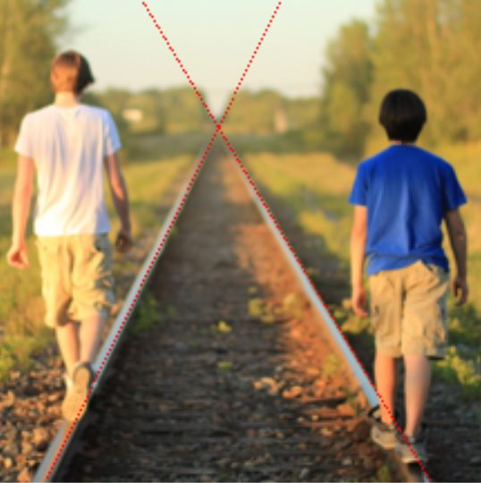
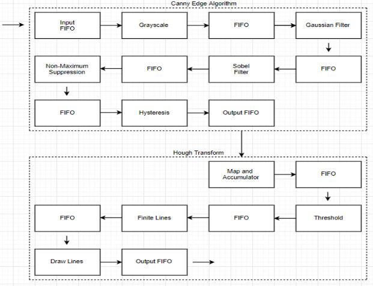
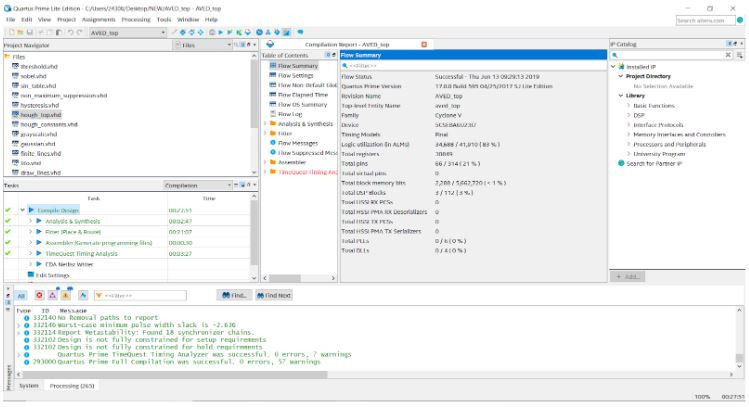

Autonomous Veichle Driving Prototype
Input Image
The goal of the Canny Edge Algorithm is to have a color image input and output
a black and white image of only the edges of the picture remaining. This algorithm
is useful for autonomous driving because once the edges of the image are found, the most
significant lines in the image (the edges of the road) can be detected using the Hough Transform.
The goal of the project was to take individual frames of the road from a video stream and output
images that detected the edges of the road. To test the functionality, an image of train tracks
were used for its similarity to road edges.
Canny Edge Algorithm Output
 This is the output of the Canny Edge Algorithm. The Canny Edge Algorithm has 5 filters. The first
filter turns the color image into grayscale. Then the Gaussain filter blurs the image using a matrix
(5x5 in this implementation). Then, the Sobel filter calculates the gradients using a 3x3 matrix.
The 4th step is to fix the white lines so they are not as thick through non-maximum suppression.
Finally, Hysteresis will keep the pixel if the pixel exceeds the high threshold or if a pixel exceeds
the low threshold value and there is one adjacent pixel.
Hough Transform Output
 This is the output of the Hough Transform. The Hough Transform has 4 steps. The first one is to use
an accumulator to determine the weights of the lines. The Accumulaton indicates all the lines on the image
and represents them in a polar coordinate system. For each pixel, there can be 180 different lines, so it
calculates the distance to the central pixel 180 times and adds 1 for the corresponding unit in accumulator.
The next step is to loop over accumulator to get all points whose value is higher than a certain “threshold”
value. Then, the finite lines component takes rho and theta value from threshold and converts into endpoints
of lines in rectangular coordinate system. Finally, the algorithm calculates points on the line and prints
a red pixel for every point
Block Diagram
 The block diagram shows this process from the input image to the final output image. There is a FIFO in-between
every block so that each pixel can be pipelined for better performance.
Synthesis Results
 These are the synthesis results from Quartus II. Our logic utilization was 34688/41910 which was 83%,
our total registers used was 30,849, our total pins was 66/214 (21%), and the total memory blocks used
was around 10%.